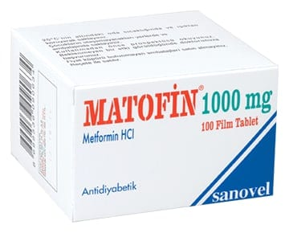

Matofin 1000 mg Film Kaplı Tablet, 100 Tablet

Ne için kullanılır
KT · Bölüm 1e Her bir film kaplı tablet 1000 mg metformin hidroklorür içeren 100 tabletlik blister ambalajlarda kullanıma sunulmuştur.
e MATOFİN beyaz renkli, iki yüzü çentikli, oblong film kaplı tablettir.
e MATOFİN oral antidiyabetikler (biguanidler) olarak adlandırılan bir ilaç grubuna dahildir. Bu tür ilaçlar şeker hastalığını (diyabet) tedavi etmede kullanılırlar.
e İnsülin pankreas tarafından üretilen ve dolaşıma verilen bir hormon olup
vücudunuzun kandaki glukozu (şeker) almasını sağlar. Vücudunuz glukozu enerji üretmek için kullanır veya ileride kullanmak için depolar. Eğer şeker hastalığınız varsa, pankreasınız yeterli insülini üretmiyor veya vücudunuz üretilen insülini düzenli kullanamıyordur. Bu durum kanınızda yüksek düzeyde glukoz bulunmasına neden olur. MATOFİN kanınızdaki glukoz düzeyini mümkün olduğunca normal düzeye düşürmeye yardımcı olur.
e MATOFİN, tek başına diyet ve egzersizin kan şekeri düzeyini kontrol etmede yetersiz kaldığı özellikle fazla kilolu tip 2 diyabetli hastaları (insülinden bağımsız diyabet olarak adlandırılan, bir tür şeker hastalığı) tedavi etmede kullanılır.
e Erişkinler, MATOFİN'i tek başına veya şeker hastalığını tedavi etmede kullanılan diğer ilaçlarla (ağızdan alınan ilaçlar veya insülin) birlikte kullanabilir.
e 10 yaş ve üzeri çocuklar ve ergenler MATOFİN'i tek başına veya insülinle birlikte kullanabilir.